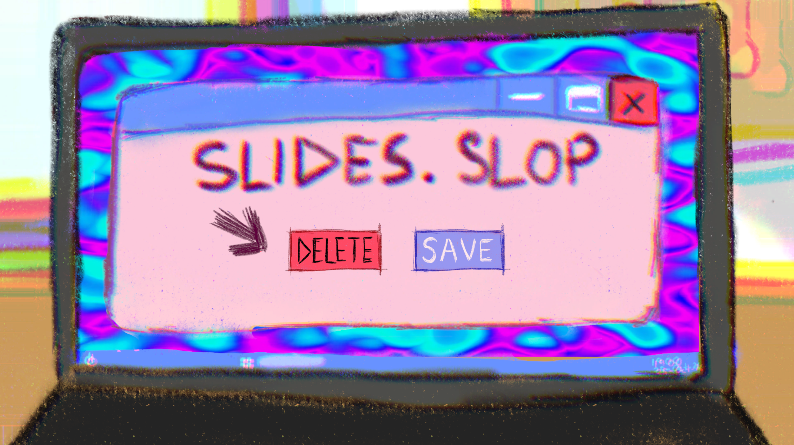
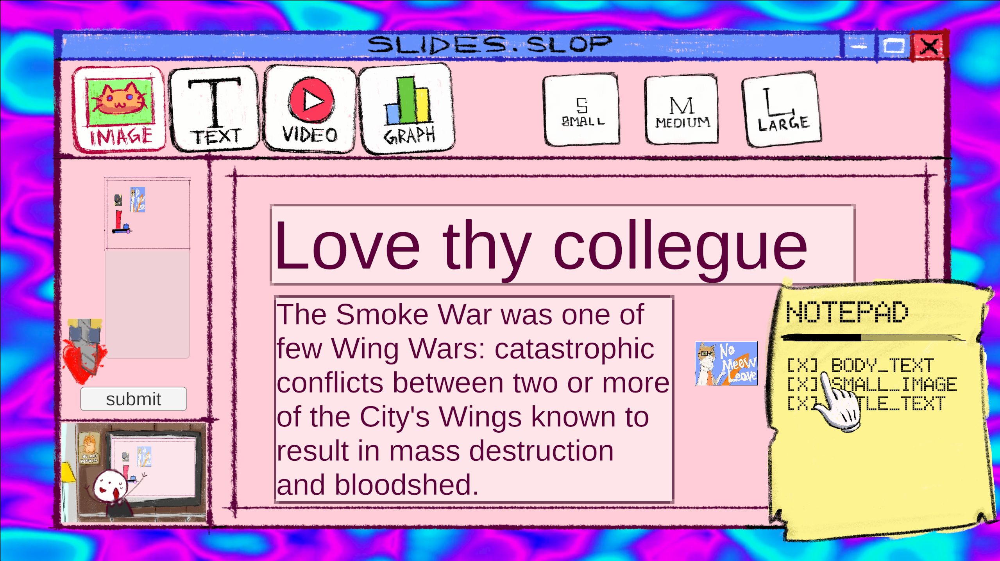

2D Game for PC
slides.slop is a short 2D Game where you play as an employee of a company but Uh Oh! You just deleted your slides for the meeting and it's in...TEN MINUTES?? With no choice left, your colleague comes up with the idea to make the slides while he presents to the client and boss!
slides.slop was made for SUTD Winter Game Jam 2026 over the course of 2 days
in a team of 5, including 3 artists and 2 programmers.
slides.slop won best art in the game jam!
As the main gameplay programmer, I developed the core mechanics and features, including:
C#, Unity


Gameplay Screenshot